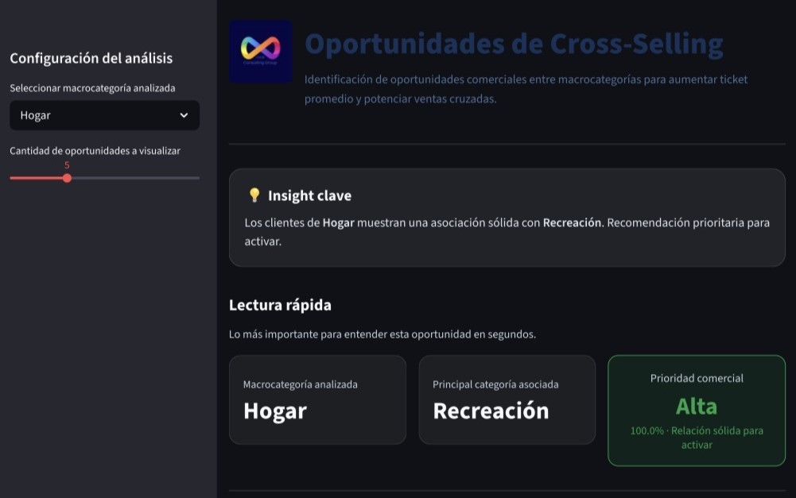
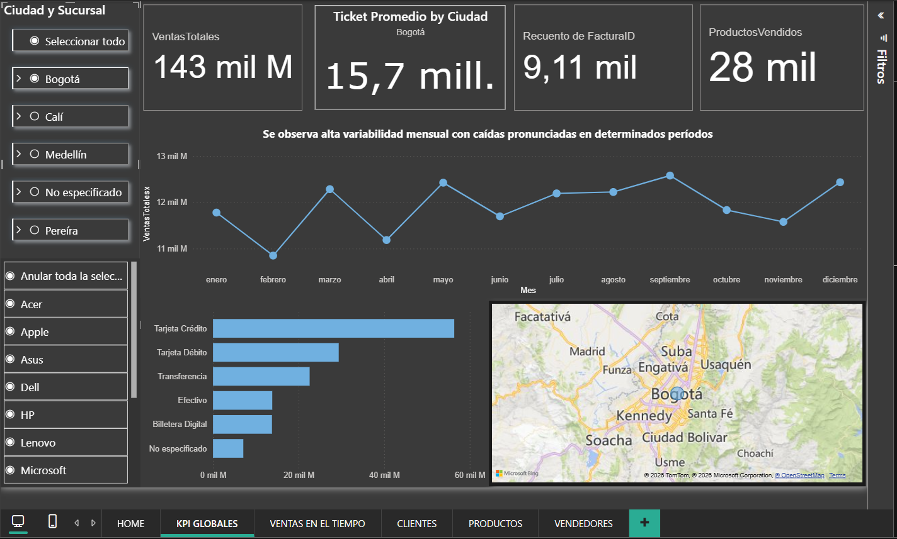

Problema
¿Cómo detectar combinaciones de productos con potencial de aumentar ingresos?
Social Media · Audiencias · Data & Performance
 Florencia Sosa Comisso
Florencia Sosa Comisso
Combino estrategia digital, analítica y marketing deportivo para entender audiencias, detectar oportunidades y diseñar acciones orientadas a engagement, crecimiento y performance.

CASO DESTACADO DATA
Sistema analítico para identificar oportunidades de venta cruzada a partir del comportamiento transaccional.
¿Cómo detectar combinaciones de productos con potencial de aumentar ingresos?
EDA + modelado + simulador interactivo para detectar oportunidades de cross-selling.
+19,4% potencial estimado de uplift en ingresos.
💡 Estrategia de negocio + machine learning + pensamiento de producto.

Pipeline con API, drift monitoring y observabilidad.

Dashboard comercial orientado a KPIs y decisiones.
Abierta a oportunidades donde se crucen audiencias, estrategia, analítica y decisiones basadas en datos.
SOCIAL MEDIA & AUDIENCIAS
Estrategia, contenido y crecimiento de comunidades
Experiencia en gestión de redes, desarrollo de audiencias, contenido orgánico, activaciones digitales, monitoreo de tendencias y análisis de performance.
Fuerza Natural — Growth & Engagement
Estrategia de contenidos y activaciones digitales para fortalecer comunidad, engagement y posicionamiento.
Desarrollo de Audiencias e Inbound
Proyecto aplicado sobre crecimiento orgánico, customer journey y optimización de contenidos basada en insights.
Marketing Deportivo & Entertainment
Interés aplicado en audiencias deportivas, comportamiento y tendencias en ecosistemas de deporte y entretenimiento.